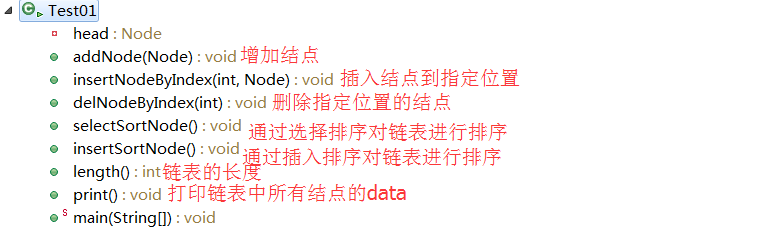
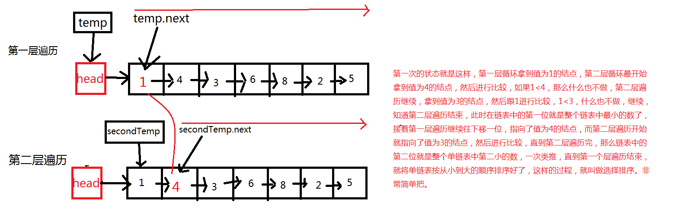

用Java实现单链表
单链表的概念
链表是最基本的数据结构，其存储的你原理图如下图所示

head为头节点，他不存放任何的数据，只是充当一个指向链表中真正存放数据的第一个节点的作用，而每个节点中都有一个next引用，指向下一个节点，就这样一节一节往下面记录，直到最后一个节点，其中的next指向null。
用java实现单链表
Node类
单链表的简单操作(增加，删除，获取总长度，链表元素排序，链表遍历)

1、增加结点操作，addNode(Node)
插入结点到链表的指定位置。 insertNodeByIndex(int index,Node node)
|
|
删除指定位置上的结点 delNodeByIndex(int index)
|
|
单链表进行选择排序 selectSortNode()
|
|
分析

单链表进行插入排序 insertSortNode()
|
|
计算单链表的长度
|
|